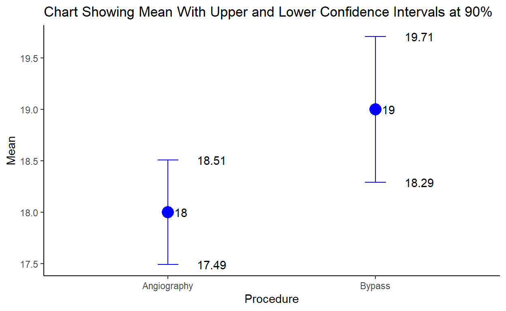

Assignment 1 for DACSS 603 course ‘Quantitative Data Analysis’: “Descriptive Statistics, Probability, Statistical Inference, and Comparing Two Means”
| Surgical Procedure | Sample Size | Mean Wait Time | Standard Deviation |
|---|---|---|---|
| Bypass | 539 | 19 | 10 |
| Angiography | 847 | 18 | 9 |
Construct the 90% confidence interval to estimate the actual mean wait time for each of the two procedures.
Is the confidence interval narrower for angiography or bypass surgery?
I calculated the answer by first calculating the standard error for each procedure given the mean, standard deviation, and sample size for each. I do so using 0.95 for the qnorm function so that I can determine the 5% confidence level for both the right and left side of the normal distribution, since the sample is larger than n=30. By calculating the 5% margin for each side of the distribution, this gives me the effective 90% confidence interval overall.
#Calculate the actual mean wait time for the bypass:
xbar1 <- 19 #sample mean
sd1a <- 10 #sample standard deviation
n1a <- 539 #sample size
error1a <- qnorm(0.95)*sd1a/sqrt(n1a)
error1a
[1] 0.7084886lower1a <- xbar1-error1a
upper1a <- xbar1+error1a
lower1a
[1] 18.29151upper1a
[1] 19.70849#Calculate the actual mean wait time for the angiography:
xbar1b <- 18 #sample mean
sd1b <- 9 #sample standard deviation
n1b <- 847 #sample size
error1b <- qnorm(0.95)*sd1b/sqrt(n1b)
error1b
[1] 0.5086606lower1b <- xbar1b-error1b
upper1b <- xbar1b+error1b
lower1b
[1] 17.49134upper1b
[1] 18.50866Next, I created a data frame with the information.
Procedure Mean Sample SD Lower Upper
1 Bypass 19 539 10 18.29151 19.70849
2 Angiography 18 847 9 17.49134 18.50866Finally, I created a plot to visualize the results. The visualization communicates that for each procedure, there is a range of values where we can expect 90% of the estimates to include the population mean given the sample mean and standard deviation.
gg1 <- ggplot(data = df1)
gg1 <- gg1 + geom_point(aes(x = Procedure, y = Mean), size = 5, color = "blue")
gg1 <- gg1 + geom_errorbar(aes(x = Procedure, y = Mean, ymin=Lower, ymax=Upper), width=.1, color = "blue")
gg1 <- gg1 + geom_text(aes(x = Procedure, y = Lower, label = round(Lower, 2)), hjust = -1)
gg1 <- gg1 + geom_text(aes(x = Procedure, y = Upper, label = round(Upper, 2)), hjust = -1)
gg1 <- gg1 + geom_text(aes(x = Procedure, y = Mean, label = round(Mean, 2)), hjust = -0.5)
gg1 <- gg1 + labs(x = "Procedure", y = "Mean")
gg1 <- gg1 + labs(title = "Chart Showing Mean With Upper and Lower Confidence Intervals at 90%")
gg1 <- gg1 + theme_classic()
gg1

For the angiography, we can be 90% sure that the population mean for the wait time to the procedure falls between 17.49 and 18.51 days.
For the bypass, we can be 90% sure that the population mean for the wait time to the procedure falls between 18.29 and 19.71 days.
The confidence interval was narrower for the angiography surgery.
A survey of 1031 adult Americans was carried out by the National Center for Public Policy. Assume that the sample is representative of adult Americans. Among those surveyed, 567 believed that college education is essential for success.
Find the point estimate, p, of the proportion of all adult Americans who believe that a college education is essential for success.
Construct and interpret a 95% confidence interval for p.
To construct the 95% confidence interval, I began by calculating the point sample estimate of the population proportion:
#Calculate the point sample estimate of the population proportion using (p = x/n)
x2 = 567 #affirmative response size
n2 = 1031 #sample size - survey participants
p2 <- x2/n2
p2
[1] 0.5499515Since np >= 5 and n(1-p) >= 5, I know that I will calculate the confidence interval of that population proportion as follows: p +/- z * square root of (p) x (1-p)/n
[1] 0.03036761lower2 <- p2-error2
upper2 <- p2+error2
lower2
[1] 0.5195839upper2
[1] 0.5803191Alternatively, using the R prop.test function, I can compare the calculation to my manual calculation and find it is the same for finding the point, but slightly different (at 4 decimal points) on the calculation of the confidence interval.
prop.test(x2, n2)
1-sample proportions test with continuity correction
data: x2 out of n2, null probability 0.5
X-squared = 10.091, df = 1, p-value = 0.00149
alternative hypothesis: true p is not equal to 0.5
95 percent confidence interval:
0.5189682 0.5805580
sample estimates:
p
0.5499515 Suppose that the financial aid office of UMass Amherst seeks to estimate the mean cost of textbooks per quarter for students. The estimate will be useful if it is within $5 of the true population mean (i.e. they want the confidence interval to have a length of $10 or less). The financial aid office is pretty sure that the amount spent on books varies widely, with most values between $30 and $200. They think that the population standard deviation is about a quarter of this range.
I will start by taking the information given and calculating the variables I need to know.
If the aid office believes the amount spent on books is between $30 and $200, I have a range of $170 to consider.
I want to be 95% confident that the interval estimate contains the population mean, so my z = 1.96.
I also know that the margin of error should be no more than +/- $5 on each end of the estimate, so my margin of error = 5
error3 <- (5)
#I need to calculate the standard deviation at the given estimate that it is a quarter of the range:
sd3 <- 170*0.25 #range * 25%
sd3 #standard deviation = 42.5
[1] 42.5#Now I can calculate the sample size with the formula n=(zσ/M)2.
ss3 <- ((1.96*sd3)/error3)^2
ss3 #sample size
[1] 277.5556According to a union agreement, the mean income for all senior-level workers in a large service company equals $500 per week. A representative of a women’s group decides to analyze whether the mean income μ for female employees matches this norm. For a random sample of nine female employees, ȳ = $410 and s = 90.
A. Test whether the mean income of female employees differs from $500 per week. Include assumptions, hypotheses, test statistic, and P-value. Interpret the result.
B. Report the P-value for Ha : μ < 500. Interpret.
C. Report and interpret the P-value for H a: μ > 500.
(Hint: The P-values for the two possible one-sided tests must sum to 1.)
H0: The mean weekly earnings for the population of women at the company is μ=$500#
Ha: The mean weekly earnings for the population of women at the company is μ≠$500
I cannot assume that the population distribution is normal as I have a low sample size of 9 and it is not stated it is a random sample, but a representative sample.
My other assumptions are:
I also need to make a decision about using a significance level of 5%.
I will use the test statistic formula to find the t-value: [t = (x̄) - (μ) / (sd/sqrt(n)]
a4 <- 500
n4 <- 9
xbar4 <- 410
sd4 <- 90
#Test statistic:
t4 <-(xbar4-a4)/(sd4/sqrt(n4))
t4
[1] -3Given that my test statistic = (-3), I can determine the p-value is .00135*2 (to get the sum of both tail probabilities) or 0.0027.
Since my confidence level is 0.05 and my p-value of 0.0027 < 0.05, I can reject the null hypothesis that the mean weekly earnings for the population of women at the company is μ=$500.
#Then I take the t-statistic result (-3) and the degrees of freedom by taking "sample size - 1" or ("9" - 1) = 8.
pval4a <- pt(-3, 8)
pval4a
[1] 0.008535841pval4b <- pt(-3, 8, lower.tail=FALSE)
pval4b
[1] 0.9914642Per the hint, I can confirm that these are logical answers by adding the two probabilities together and confirming they equal 1:
pval4a+pval4b
[1] 1Jones and Smith separately conduct studies to test H0: μ = 500 against Ha : μ ≠ 500, each with n = 1000.
Jones gets ȳ = 519.5, with se = 10.0. Smith gets ȳ = 519.7.
A. Show that t = 1.95 and P-value = 0.051 for Jones. Show that t = 1.97 and P-value = 0.049 for Smith.
B. Using α = 0.05, for each study indicate whether the result is “statistically significant.”
C. Using this example, explain the misleading aspects of reporting the result of a test as “P ≤ 0.05” versus “P > 0.05,” or as “reject H0” versus “Do not reject H0 ,” without reporting the actual P-value.
#Test statistic for Jones:
ybar5a <- 519.5
n5 <- 1000
a5 <- 500
se5 <- 10.0
t5a <-(ybar5a-a5)/(se5)
t5a
[1] 1.95#Test statistic for Smith:
ybar5b <- 519.7
n5 <- 1000
a5 <- 500
se5 <- 10.0
t5b <-(ybar5b-a5)/(se5)
t5b
[1] 1.97#For Jones' results:
pval5a <- pt(1.95, 999, lower.tail = FALSE) * 2
pval5a
[1] 0.05145555#For Smith's results:
pval5b <- pt(1.97, 999, lower.tail = FALSE) * 2
pval5b
[1] 0.04911426Hypothesis tests tell us that if the p-value < α, we reject H0 and if p-value ≥ α, we do not reject H0. Given this general statistical guidance, only Smith’s results would be considered “statistically significant”.
Are the taxes on gasoline very high in the United States? According to the American Petroleum Institute, the per gallon federal tax that was levied on gasoline was 18.4 cents per gallon. However, state and local taxes vary over the same period. The sample data of gasoline taxes for 18 large cities is given below in the variable called gas_taxes.
gas_taxes <- c(51.27, 47.43, 38.89, 41.95, 28.61, 41.29, 52.19, 49.48, 35.02, 48.13, 39.28, 54.41, 41.66, 30.28, 18.49, 38.72, 33.41, 45.02)
To answer whether there is enough evidence to conclude at a 95% confidence level that the average tax per gallon of gas in the US in 2005 was less than 45 cents, we need to use a left-tailed t-test. We will use the sample data in the variable “gas_taxes” in the t.test function. We know that the t.test() function uses the 95% confidence interval as a default, but it also uses a two-sided test as the default, so we need to provide the alternative argument “less”, indicating a left-sided test.
gas_taxes <- c(51.27, 47.43, 38.89, 41.95, 28.61, 41.29, 52.19, 49.48, 35.02, 48.13, 39.28, 54.41, 41.66, 30.28, 18.49, 38.72, 33.41, 45.02)
t.test(gas_taxes, alternative = "less")
One Sample t-test
data: gas_taxes
t = 18.625, df = 17, p-value = 1
alternative hypothesis: true mean is less than 0
95 percent confidence interval:
-Inf 44.67946
sample estimates:
mean of x
40.86278 This t-test gives us a confidence interval of [inf - 44.67946]. Since the confidence interval includes amounts that are all less than 45 cents, we have enough evidence to conclude that, at that confidence level, the average tax was less than 45 cents.